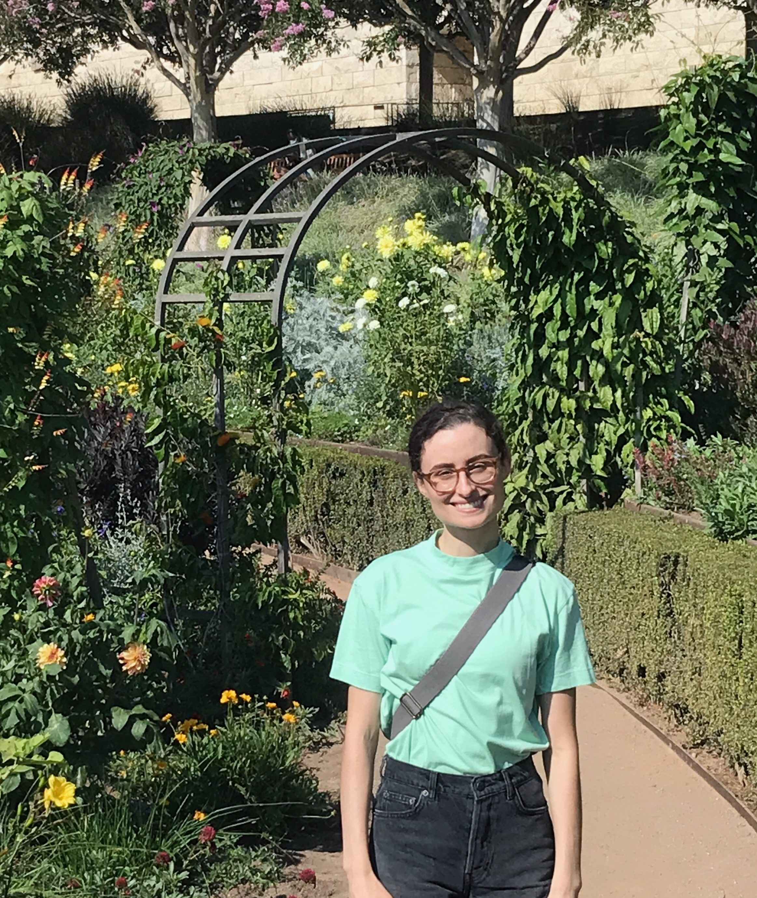

Morgan P. Opie
E-mail mpopie AT northwestern DOT edu
Office Lunt B22
Pronouns She/her
I am a Boas Assistant Professor at Northwestern University.
My interests are primarily in homotopy theory and its applications to problems in geometry and topology. In my PhD thesis, I classified complex topological vector bundles of rank three on complex projective five-space. I am currently thinking about other problems related to (unstable) vector bundles and how they can be studied using tools from homotopy theory.
I am also interested in homotopical aspects of algebraic geometry, e.g., motivic homotopy theory and its applications to algebraic vector bundles. My projects so far on algebraic geometry have involved analogues classical invariants (degree and Euler characteristic) in motivic homotopy theory. My interest in algebraic geometry goes back to my undergraduate thesis, where I studied extremal effective divisors on the moduli space of stable rational curves with marked points.
I have also worked on various topics related to abstract homotopy theory and its applications, including homotopy theory of graphs and homotopy type theory.
Before moving to Northwestern in July 2025, I was a Hedrick Assistant Adjunct Professor and NSF postdoc at UCLA, mentored by Mike Hill. I completed my PhD at Harvard, where I worked with Michael J. Hopkins.
I completed my undergraduate studies at the University of Massachusetts Amherst, where I wrote an honors thesis in algebraic geometry with Jenia Tevelev. I began my undergraduate degree at Cape Cod Community College.
For four years, I was an organizer for the MIT Talbot Workshop. I am still happy to talk about Talbot, but queries related to upcoming Talbots should be directed to talbotworkshop AT gmail DOT com.
My CV.
Preprints
Enumerating complex rank n vector bundles on CP^{n+1} . To appear in Proceedings of the AMS.
Enumerating stably trivial vector bundles with higher real K-theories. With Hood Chatham and Yang Hu. Submitted.
Rank-preserving additions for topological vector bundles, after a construction of Horrocks. To appear in Algebraic and Geometric Topology.
Published papers
Cofibration category of digraphs for path homology, with Daniel Carranza, Brandon Doherty, Chris Kapulkin, Maru Sarazola, and Liang Ze Wong. In Algebraic Combinatorics.
A classification of complex rank 3 bundles on complex projective 5-space. In Advances in Mathematics.
Compactly Supported $\mathbb{A}^1$-Euler characteristic and the Hochschild complex. My project at Women in Topology III , with Niny Arcila Maya, Candace Bethea, Kirsten Wickelgren, and Inna Zhakarevich. In Topology and its Applications .
The trace of the $\mathbb{A}^1$-local degree, with Thomas Brazelton, Robert Burklund, Stephen McKean, and Michael Montoro. In Homotopy, Homology, and Applications.
Localization in Homotopy Type Theory, with J. Daniel Christensen, Egbert Rijke, and Luis Scoccola. In Higher Structures.
Effective divisors on moduli spaces of rational curves with marked points. In Michigan Mathematical Journal. My undergrad thesis.
Other work
As part of my undergrad thesis, I created a related database of spherical hypertree divisors generated using Macaulay2.
Teaching
In Spring 2025, I am teaching Math 115A (linear algebra/ intro to proofs) at UCLA.
In Fall 2024, I taught Math 115A at UCLA.
In Summer 2024, I led a one-week mini course on the Borsuk--Ulam theorem as part of UCLA's Summer Bridge Program for Cal State University students.
In Spring 2024, I taught teaching Math 115AH (honors linear algebra/ intro to proofs) at UCLA.
In Fall 2023, I taught Math 115A at UCLA.
In Summer 2023, I led a one-week mini course on category theory as part of the UCLA's Summer Bridge Program for Cal State University students.
In Summer 2022, I led a one-week mini course on Riemann Surfaces and algebraic geometry as part of UCLA's Summer Bridge Program for Cal State University students.
I was awarded a Liggett Instructor Award for excellence in teaching at UCLA, 2021-2022
In both Fall 2021 and Winter 2022, I taught two sections of math 115A at UCLA.
For the 2020-2021 academic year, I was Bok Center Pegagogy Fellow in mathematics.
In summer 2019 I taught a tutorial on Knot Invariants and Categorification, with co-instructor Joshua Wang.
In summer 2018 I taught a tutorial on Category Theory.
In spring 2018 I taught Math 21b (Linear Algebra and Differential Equations) at Harvard.
In fall 2017, I was a graduate course assistant for math 23a (Linear algebra and real analysis I) at Harvard.
My travel page lists conferences I have attended or plan to attend.
If you would like me to write you a letter of recommendation, please fill out this form.
Background by Brirush - Own work, CC BY-SA 3.0, Link